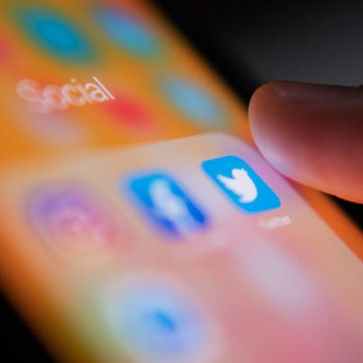

Наследникът на изумрудената мина, (не)известен сериен предприемач и производител на страховити автомобили Илон Мъск най-накрая купи Twitter за общо 44 милиарда долара след дълъг танц на феновете, който очевидно не беше достатъчно дълъг, за да му позволи да упражнява разумно старание. Съдебната битка за опита му да се откаже от сделката спря в края на октомври и след като продажбата беше финализирана, Мъск не губи време да направи най-непопулярните промени, независимо навлезе в десни конспиративни теории, премахвайки блокира много обвинени активисти от ярките светлини в обществото мрежи. Оттогава той обещава да се оттегли от позицията си на главен изпълнителен директор, след като анкетата в Twitter силно подсказа, че потребителите искат да го напусне, въпреки че той каза с ясно изразена благодат, че ще остане на поста, докато не разбере кой е друг „достатъчно глупав, за да го спаси“. Въпреки това, че може да се спори дали една социална медийна компания е наистина „технологична компания“, няма съмнение, че бизнес лидерите във всички области се опитват от Мъск уроци как да не управляват компанията.